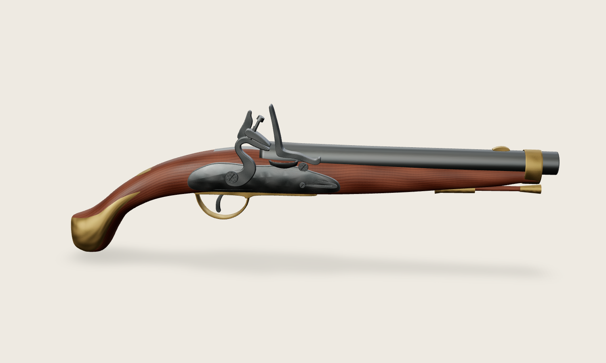
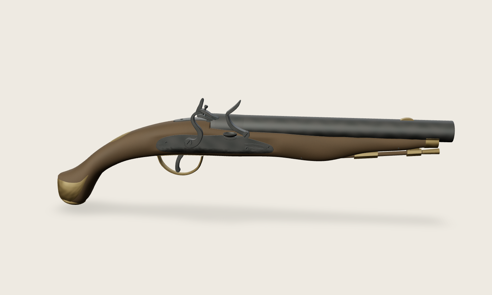

Пистолет 1798/1804 · контроль геометрии
Тульский прототип 1803 года. Наружная реконструкция, версия 0.2.0. Ствол 269 мм; дульный вход 17 мм; общий габарит около 460 мм. Параметры глубины и скрытая посадка реконструированы, независимая историческая экспертиза не выполнена.
Все 20 изображений получены из экспортированного и повторно загруженного GLB. Ортографическая камера исключает перспективное увеличение дула. Геометрия целиком остаётся в сцене; близкие виды кадрируются по выбранной области. Освещение контрольных видов одинаковое, с дополнительным заполняющим светом; runtime освещение не менялось. Нажмите изображение для просмотра в исходном размере 1500 × 900.
Технический отчёт и соединения · Метрики GLB и каждого вида
Исходная модель → исправленная модель

До: сохранённый снимок текущего checkout перед проходом.

После: та же hero-камера и студийное освещение.
Контрольные ракурсы
 01-right · Правый силуэт
01-right · Правый силуэт
 02-left · Левый силуэт
02-left · Левый силуэт
 03-top · Вид сверху
03-top · Вид сверху
 04-bottom · Вид снизу
04-bottom · Вид снизу
 05-front · Вид спереди
05-front · Вид спереди
 06-rear · Вид сзади
06-rear · Вид сзади
 07-front-3-quarter · Передние три четверти
07-front-3-quarter · Передние три четверти
 08-rear-3-quarter · Задние три четверти
08-rear-3-quarter · Задние три четверти
 09-lock · Замок
09-lock · Замок
 10-cock · Курок и кремень
10-cock · Курок и кремень
 11-frizzen-pan · Огниво и полка
11-frizzen-pan · Огниво и полка
 12-breech · Казённая часть и хвостовик
12-breech · Казённая часть и хвостовик
 13-muzzle · Дульный срез
13-muzzle · Дульный срез
 14-sideplate · Боковая накладка
14-sideplate · Боковая накладка
 15-trigger · Спуск и скоба
15-trigger · Спуск и скоба
 16-ramrod · Шомпол
16-ramrod · Шомпол
 17-ramrod-pipes · Две шомпольные трубки
17-ramrod-pipes · Две шомпольные трубки
 18-foreend · Устье цевья
18-foreend · Устье цевья
 19-buttcap · Набалдашник
19-buttcap · Набалдашник
 20-stock-cross-section-area · Поперечный объём в зоне замка
20-stock-cross-section-area · Поперечный объём в зоне замка